- Index
- Wurlitzer Music
- 1929 Band Organ Catalog
1929 Wurlitzer Band Organ Catalog
Edited and Converted to HTML by David Back, August and December 2012.
Index
1.0 Introduction2.0 Style No. 103-Military Band Organ
2.1 Style No. 105-Military Band Organ
2.2 Style No. 104-Military Band Organ
2.3 Style No. 106-Military Band Organ
2.4 Style No. 125-Rink or Carouselle Organ
2.5 Style No. 145-B Military Band Organ
2.6 Style No. 146-A Military Band Organ
2.7 Style No. 146-B Military Band Organ
2.8 Style No, 148-Skating Rink Military Band
2.9 Style No. 153-Duplex Orchestral Organ
2.10 Style No. 157-Duplex Orchestral Organ
2.11 Style No. 164-Band Organ
2.12 Style No. 165-Duplex Orchestral Organ
2.13 Style No. 180-Concert Band
2.14 The New Wurlitzer Caliola
3.0 Special Features that are Exclusive to Wurlitzer Instruments
MILITARY BAND ORGANS for SKATING RINKS, CAROUSELLES, FAIRS and AMUSEMENT PARKS
by THE RUDOLPH WURLITZER MFG. CO.
NORTH TONAWANDA, N. Y.Where Wurlitzer Band Organs are Built.
1.0 Introduction
WURLITZER MILITARY BAND ORGANS produce lively, enjoyable music of such great volume that they are sure to attract crowds. Built by Wurlitzer, who are renowned throughout the world as the foremost manufacturers of musical instruments, you are assured absolute dependability, and the latest improved features. The variety of selections is greater; the tone quality is superior, and the instrumentation harmonizes and keeps perfect time. Wurlitzer Military Band Organs will create and maintain a splendid income. Many owners of Wurlitzer organs have become independently wealthy. The saving on music, and the increase in patronage should pay for the instrument in a short time, and then yield a handsome profit. You have no orchestra or band problems to worry about. Just press a button, and the instrument becomes your willing servant. You can start early, please your crowd by playing longer numbers, and instead of paying out most of your profit for music, you can save it. A Wurlitzer Military Band never" gets tired," and responds to your instant command. Wurlitzer Music Rolls are cut correctly, and come in all the latest popular and standard selections. By using a paper roll system, we cut the music and reproduce it exactly as originally arranged, giving it the same snap and swing that the composer intended.2.0 Style No. 103-Military Band Organ

2.0.1 Description
41 Keys, Played by (125 style) paper music rolls.Designed especially for Miniature Carouselles, Kiddie Swings and other children's amusements. Just the size organ for a Pit Show. An all-wood trumpet organ which holds its tone well and is not affected by sudden temperature changes. The organ is small, but very compact, and has exceptional volume for its size. It is easily transported when packed, and two men can easily carry the instrument about.
Built in an Oak Veneered Case, finished light Fumed Oak or Golden Oak. Paneled front handsomely decorated with landscapes or flower designs. A very attractive little organ.
Plays Style No. 125 long tune paper rolls, and contains all the late improvements we have incorporated in the larger organs.
2.0.2 Instrumentation
5 Wood Basses; 9 Wood Accompaniment Pipes; 14 Wood Violins; 14 Wood Flutes; 13 Wood Trumpets (on draw stop.)2.0.3 Dimensions
HEIGHT, 3 feet 6 inches. WIDTH,3 feet 2 inches. DEPTH, 2 feet I inch (including crankshaft extension). WEIGHT, NET, 235 Ibs.; PACKED, 375 lbs.2.1 Style No. 105-Military Band Organ
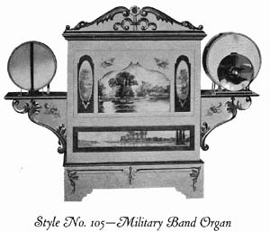2.1.1 Description
Played by (125 style) paper music rolls.This particular style Wurlitzer Military Band Organ has 44 keys, insuring a wide range of melody.
2.1.2 Instrumentation
OUTSIDE VISIBLE- 2 Drums and Cymbal mounted on brackets.INSIDE- 14 Wooden Piccolos; 14 Wooden Flageolets; 5 Open Basses; 14 Violin Pipes "Melody; 13 Wooden Trumpets; 9 Open Pipes in Accompaniment; 6 Stopped Pipes in Melody.
BOTTOM- 5 Stopped Basses; 9 Stopped Accompaniment; 8 Stopped Melody.
FIVE Stops- 1 for Piccolos; 1 for Flageolets; 1 for Accompaniment; 1 for Melody and 1 for Trumpets.
2.1.3 Dimensions-STYLE No. 105
HEIGHT, 4 feet 10 inches to top of scroll. WIDTH, 6 feet 6 inches. DEPTH, 2 feet 4 inches. SHIPPING WEIGHT, 550 lbs.2.2 Style No. 104-Military Band Organ
2.2.1 Description
2.2.2 Instrumentation
Same instrumentation as Style No. 105, less Drums and Cymbal.2.2.3 Dimensions-STYLE No. 104
HEIGHT. 4 feet 1 inch. WIDTH, 3 feet 6 inches. DEPTH, 2 feet 4 inches. Case is made of Golden Oak. SHIPPING WEIGHT, 500 Ibs.2.3 Style No. 106-Military Band Organ
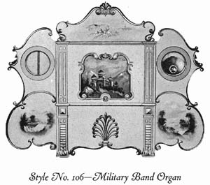2.3.1 Description
Played by (125 style) paper music rolls.This beautiful instrument is made with 44 keys. Built in Oak Veneered Case, fancy white enamel carved front, decorated with hand painted panels. Top Scroll hinged to top of organ.
2.3.2 Instrumentation
OUTSIDE, VISIBLE- 2 Drums and Cymbal, with demountable Wings.INSIDE- 14 Wooden Piccolos; 14 Flageolets; 5 Open Basses; 14 Violin Pipes Melody; 13 Wooden Trumpets; 9 Open Pipes, in Accompaniment; 6 Stopped Pipes, in Melody.
BOTTOM- 5 Stopped Basses; 9 Stopped Accompaniment; 8 Stopped Melody.
FIVE Stops-1 for Piccolos; 1 for Flageolets; 1 for Accompaniment; 1 for Melody and 1 for Trumpets.
2.3.3 Dimensions
HEIGHT, to top of Scroll, 5 feet 7 inches. HEIGHT, with Scroll down, 4 feet 4 inches. WIDTH, with Wings, 7 feet 3 inches. WIDTH, without Wings, 3 feet 7 inches. DEPTH, 2 feet 6 inches. WEIGHT, 600 lbs.2.4 Style No. 125-Rink or Carouselle Organ
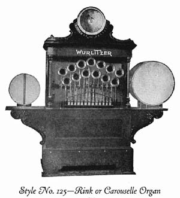2.4.1 Description
44 Keys, Played by (125 style) paper music rolls.Especially designed for small to medium size rinks.
2.4.2 Instrumentation
OUTSIDE, VISIBLE- 13 Brass Trumpets; 13 Brass Piccolos; 13 Wooden Flageolets; 2 Drums; Cymbal.INSIDE- 5 Wooden Trombones; 5 Open Basses; 13 Open Pipes; 6 Stopped Pipes; 11 Pipes in Accompaniment.
BOTTOM- 5 Stopped Basses; 7 Stopped Pipes; 10 Pipes in Accompaniment;
1 Stop for Trumpets; 1 Stop for Trombones; 1 Stop for Piccolos; 1 Stop for Flageolets.
Bass Drum, Snare Drum and Cymbal.
2.4.3 Dimensions
HEIGHT, 6 feet 3 inches. WIDTH, 6 feet 7 inches. DEPTH, 2 feet 3 1/2 inches. SHIPPING WEIGHT, 800 lbs.2.5 Style No. 145-B Military Band Organ
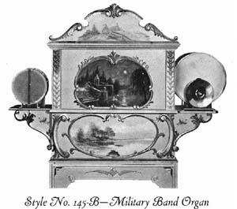2.5.1 Description
51 Keys, Played by (150 style) paper music rolls.Built in Oak Veneered Case, finished natural, with fancy white enameled carved front decorated with gold leaf, colors and beautiful landscapes.
This instrument is equipped with the long tune Tracker Frame. Drums are fastened on demountable brackets. These may be detached and packed for shipment. Top Scroll is hinged to top of Organ.
2.5.2 Instrumentation
OUTSIDE, VISIBLE- Latest improved Bass and Snare Drums with spring tension rods. Rust-proof finish and nickel-plated Cymbal. INSIDE- 3 Wooden Trombones; 3 Octave Stopped Basses; 15 Wooden Trumpets; 15 Stopped Flute Pipes; 16 Violin Pipes; 16 Open Flute Pipes; 9 Open PipesBOTTOM- 3 Open Basses; 9 Stopped Pipes; 16 Stopped Melody Pipes.
BELLS- 16 heavily nickeled Bell Bars, playing from music roll
DRAW STOPS- 1 for Trumpets; 1 for Flute and 1 for Violin.
2.5.3 Dimensions
HEIGHT, 6 feet to top of Scroll, 5 feet with Scroll turned down. WIDTH with Drums, 7 feet 2 inches, without Drums 4 feet 4 inches. DEPTH, 2 feet 4 inches. WEIGHT, packed for shipment, 850 lbs.2.6 Style No. 146-A Military Band Organ
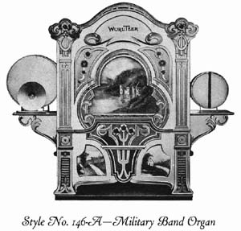2.6.1 Description
49 Keys, Played by (150 style) paper music rolls.Built in Oak Veneered Case, fancy white enamel carved front decorated with gold leaf and colors and hand painted panels.
2.6.2 Instrumentation
OUTSIDE, VISIBLE- Latest improved Bass and Snare Drum with spring tension and nickel-plated Cymbal.INSIDE- 3 Wooden Trombones; 3 Octave Stopped Basses; 15 Wooden Trumpets; 15 Stopped Flute Pipes; 16 Violin Pipes; 9 Open Pipes; 16 Open Flute Pipes.
BOTTOM- 3 Open Bass Pipes; 9 Stopped Accompaniment Pipes; 16 Stopped Melody.
Stops- 1 for Trumpets; 1 for Stopped Flute and 1 for Inside Violin.
2.6.3 Dimensions
HEIGHT to top of Scroll, 6 feet 1 inch. HEIGHT with Scroll down. 5 feet 4 inches. WIDTH, with Drums. 7 feet 2 inches, without Drums, 4 feet 3 inches. DEPTH, 2 feet 5 1/2 inches. WEIGHT, packed for shipment, 900 lbs.2.7 Style No. 146-B Military Band Organ
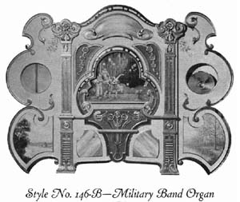2.7.1 Description
51 Keys, Played by (150 style) paper music rolls.Built in Oak Veneered Case, finished natural, with fancy white enameled carved front decorated with gold leaf, colors and beautiful landscapes.
Regularly equipped with our long tune Tracker Frame.
Wings of three-ply veneered stock, light weight, very strong and will not warp out of shape. Wings arranged to hook to sides of organ case. Easily detached and packed for shipment.
2.7.2 Instrumentation
OUTSIDE, VISIBLE- Latest improved Bass and Snare Drum with spring tension rods. Rust-proof finish and nickel-plated Cymbal. lNSIDE- 16 Octave Violin Pipes; 3 Wooden Trombones; 3 Octave Stopped Bass Pipes; 15 Wooden Trumpets; 15 Stopped Flute Pipes; 16 Violin Pipes; 9 Open Pipes.BOTTOM- 3 Open Bass Pipes; 9 Stopped Accompaniment Pipes; 16 Stopped Melody Pipes.
BELLS- 6 heavily nickeled Bell Bars, playing from music roll.
Draw Stops, for Trumpets, Stopped Flutes and Inside Violins.
2.7.3 Dimensions
HEIGHT to top of Scroll, 6 feet 1 inch. HEIGHT with Scroll down, 5 feet 4 inches. WIDTH, with Wings, 8 feet 1 inch. WIDTH, without Wings, 4 feet 3 inches. DEPTH, 2 feet 5 inches SHIPPING WEIGHT, 950 lbs.2.8 Style No. 148-Skating Rink Military Band
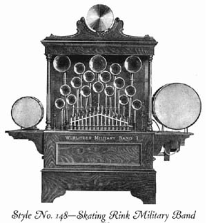2.8.1 Description
49 Keys, Played by (150 style) paper music rolls.This style is one of our best sellers, being just right in size and volume for the average sized rink. It is equal to a band of from seven to ten pieces and will amply fill a rink with a floor space of from 8,000 to 10,000 square feet.
The CASE is very handsome in appearance and is made of quarter sawed Oak-either Golden or Weathered.
2.8.2 Instrumentation
OUTSIDE, VISIBLE- 3 Heavy Brass Trombones; 15 Brass Trumpets; 16 Brass Clarionets; 16 Brass Piccolos.INSIDE- 28 Open Pipes; 21 Stopped Pipes
BOTTOM- 28 Stopped Pipes. Bass and Snare Drums; Cymbals.
STOPS- 1 for Clarionets; 1 for Trumpets; 1 for Violin; 1 for Stopped Diapason.
2.8.3 Dimensions
HEIGHT, including Cymbals, 7 feet 5 inches. WIDTH, including Drums, 7 feet 2 inches. DEPTH, 2 feet 10 inches. WEIGHT, GROSS, 1,050 lbs.; TARE, 450 lbs.; NET, 600 lbs.2.9 Style No. 153-Duplex Orchestral Organ
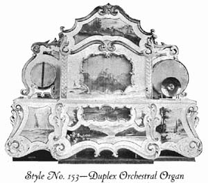2.9.1 Description
For Three-Abreast Carouselles and Open-Air Dance Pavilions.54 Keys with duplex (150 style) long roll Tracker Frames, latest drums with self tightening tension rods.
Oak Veneered Case; natural finish; fancy white enamel front; hand-carved scroll work in gold leaf and colors. Raised panels decorated with landscape and flowered designs.
2.9.2 Instrumentation
BASSES-3 Wooden Trombones; 3 eight-foot Stopped Diapason Pipes; 3 fourfoot Open Diapason Pipes; 3 two-foot Stopped Diapason Pipes.ACCOMPANIMENT-9 Stopped Flute Pipes; 18 Violin Pipes.
MELODY-16 Stopped Flute; 16 Octave Violin; 15 Wooden Trumpets; 15 Cello Pipes; 32 Violin; 16 Open Flute; 15 Stopped Pipes; 16 Bell Bars.
TRAPS-Bass Drum; Snare Drum and Cymbal.
AUTOMATIC Stops--1 for Octave Violin; 1 for Open Flute; 1 for Cello Pipes; 1 for Stopped Pipes; 1 for Bell Bars; 1 for Swell Shutters.
2.9.3 Dimensions
HEIGHT, with front, 7 feet I inch; without front. 5 feet 2 inches. WIDTH. with front. 8 feet 8 inches; without front. 4 feet 2 1/2 inches. DEPTH. with front, 3 feet 8 inches; without front. 2 feet 7 1/2 inches. WEIGHT. packed for shipment, 1,300 lbs.2.10 Style No. 157-Duplex Orchestral Organ
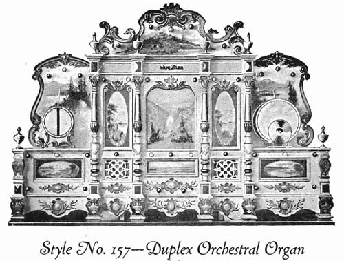2.10.1 Description
61 Keys, For Dance Pavilions, Carouselles and other Open-Air AmusementsBuilt in Oak Veneered Case, natural finish.
Beautiful white enameled front, elaborately carved and decorated with gold leaf and colors. Panels and screen over swell shutters beautifully decorated with realistic landscapes. To further set off the organ, the decorative front is wired for thirty-four 16 C. P. lamps, with an additional red lamp in each drum. These lights are usually furnished in red, white and blue colors, and the organ makes a wonderful- display at night.
Equipped with Duplex Tracker Frame to Play same Rolls as Style 165 Organ.
2.10.2 Instrumentation
BASS-6 Wood Trombones; 6 Stopped Diapason Pipes; 6 Stopped Octave Diapason Pipes.ACCOMPANIMENTS-10 Stopped Flute Pipes; 10 Open Flute Pipes; 10 Open Piccolo Pipes.
MELODY-44 Violin Pipes; 22 Octave Violin Pipes; 22 Piccolo Pipes; 22 Open Flute Pipes; 22 Stopped Flute Pipes; 16 Bell Bars.
TRUMPETS-14 Wood Trumpets; 14 Wood Clarionets.
TRAPs-Bass Drum (automatic tension); Snare Drum; Cymbal.
AUTOMATIC STops-l for Bells; 1 for Swell and Wood Trombones.
DRAW STops-1 for Wood Trombones; 1 for Wood Trumpets; 1 for Violins; 1 for Flutes; 1 for Piccolos.
2.10.3 Dimensions
HEIGHT, 8 feet 4 1/2 inches. WIDTH, 12 feet 2 inches. DEPTH, 3 feet 10 inches. WEIGHT, packed for-shipment, 1,900 lbs.2.11 Style No. 164-Band Organ
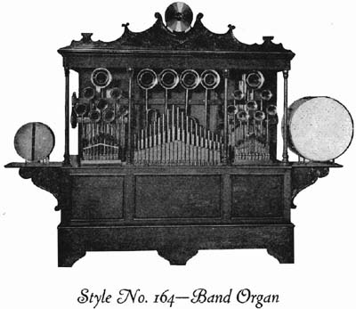2.11.1 Description
57 Keys, FINISHED IN GOLDEN OAKEquipped with drums on brackets on side of case easily detached. Drums can also be put on top of the organ if desired.
Duplex Tracker Frame.
8 Draw Stops for-Trombones, Trumpets, Clarionets, Piccolos, Cello, Flute and two Violins.
1 Automatic Stop for Glockenspiel.
2.11.2 Instrumentation
BASS-6 eight-foot Stopped Diapason Pipes; 6 four-foot Open Diapason Pipes, 6 Brass Trombone Pipes.ACCOMPANIMENT 10 eight-foot Stopped Diapason Pipes; 10 four-foot Open Diapason Pipes; 10 four-foot Stopped Diapason Pipes; 20 two-foot Violin Diapason Pipes.
TRUMPETS-14 Brass Trumpets, 14 Wood Trumpets.
MELODY-22 Brass Clarionette; 22 Brass Piccolos; 22 four-foot Cello Pipes; 44 two-foot Violin Pipes; 22 four-foot Stopped Flutes; 22 two-foot Stopped Flutes; 22 Flageojets; 22 Flutes, 22 Octave Violin, 22 Glockenspiel.
2.11.3 Dimensions
HEIGHT, when assembled, 8 feet 1 inch. WIDTH, when assembled, 11 feet. DEPTH, when assembled, 4 feet. WEIGHT, when packed, 3,000 lbs.2.12 Style No. 165-Duplex Orchestral Organ
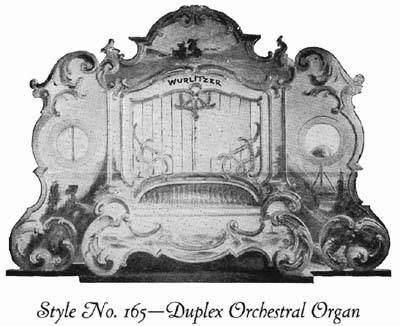2.12.1 Description
69 Keys, For largest type stationary Carouselles, Roller Coasters and other Park installations. Used with great success in Park Dance Pavilions.Case, Oak Veneered; finished natural, with highly decorated white enamel fancy front; wings detachable.
Equipped with Duplex Tracker Frame.
Automatic rewind; stops off and cut-off for drums.
2.12.2 Instrumentation
BASSES-6 eight-foot Stopped Pipes; 6 eight-foot Open Pipes; 6 Wood Trombones.ACCOMPANIMENT-1O Stopped Pipes; 10 Open Pipes.
MELODY-14 Wood Trumpets; 14 Wood Bassoons; 14 Wood Viola Pipes; 22 Flute Pipes; 22 Piccolo Pipes; 22 Flageolet Pipes; 22 Open Piccolos; 22 Loud Violin; 22 Soft Violin; 22 Bells.
TRAPs-Bass Drum; Cymbal; Crash Cymbal; Triangle; Snare Drum; Castanets.
Automatic Swell Shutters.
AUTOMATIC STops-1 for Trombone; 1 for Trumpets; 1 for Bells; 1 for Flute and Piccolo; 1 for Flageolet and Open Piccolo; 1 for Loud Violin; 1 for Soft Violin.
2.12.3 Dimensions
DIMENSIONS WITH FRONT ON-HEIGHT. 8 feet 5 inches. WIDTH, 12 feet 8 inches. DEPTH., 4 feet 4 inches.DIMENSIONS WITHOUT FRONT ON -HEIGHT, 5 feet 10 1/2 inches. WIDTH. 6 feet 5 inches. DEPTH, 3 feet.
WEIGHT, packed for shipment, 3,000 lbs.
2.13 Style No. 180-Concert Band
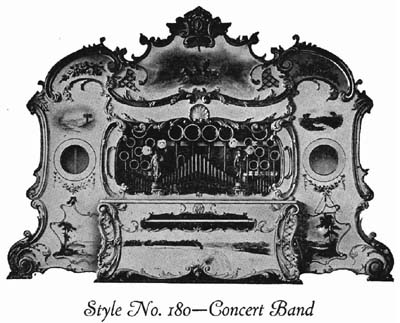2.13.1 Description
In introducing the Style 180 Organ, we have endeavored to produce an instrument that will give satisfactory results in the way of automatic band music for the largest skating rinks built.The case design is similar to the cut shown above. The front is finished in white enamel, the hand-carved scroll-work decorated with colors and shaded bronzes. The raised panels beautifully decorated with landscapes or flower designs. The case is finished in light Golden Oak.
The instrument has the Duplex Tracker Frame, which is driven separately by a 1/8 H.P. electric motor. This motor is operated by a remote control switch, so that the music can be cut off at any time without shutting off the power on the Blower line. This switch can be placed anywhere desired.
It is impossible to build Bellows strong enough to supply the wind for an instrument of this type. The suction and pressure is supplied by a specially constructed steel Blower, driven by a 3 H.P. electric motor which operates at 3,500 R.P.M.
2.13.2 Instrumentation
BASSES 13-8-foot Stopped Diapason 26--8-foot Open DiapasonACCOMPANIMENT 26-2-foot Stopped Flutes 26-2-foot Open Flutes
TROMBONES 18 Brass Trombones
BARITONE 18-4-foot Stopped Flutes 18-4-foot Open Flutes
MELODY
| 30 Brass Clarionets | 30 Soft Violin Pipes |
| 30 Violin Cello Pipes | 30 Stopped Diapason |
| 60 Wood Violin Pipes | 30 Stopped Flutes |
| 25 Flute Pipes | 25 Open Piccolos |
| 25 Brass Piccolos | 25 Stopped Piccolos |
BELLS 30 Uniphone Bells, operating from music roll
TRAPS 1 Bass Drum, 12 inches x 30 inches Cymbal 2 Snare Drums, 5 inches x 13 inches Crash Cymbal Chinese Block
Total number of pipes, 480
Playing notes, 88, with 36 additional notes controlled by couplers.
Organ has 7 draw stops by means of which different combinations can be set to play, and the volume cut down and the tone of the organ softened, if desired.
2.13.3 Dimensions
HEIGHT, 7 feet 1 inch. LENGTH, 10 feet 7 inches. DEPTH, 4 feet 3 1/2 inches.DIMENSIONS INCLUDING FRONT
HEIGHT, 10 feet 8 inches. LENGTH, 18 feet 8 inches. DEPTH, 5 feet.
ELECTRIC MOTORS
Tracker Frame Motor, 1/8 HP., 1,150 R.P.M. connected direct to Tracker Frame, by means of worm gear drive.
Blower Motor, 3 H.P., 3,500 R.P.M. connected direct to steel Orgoblo supplying 75 cubic feet vacuum at 32 inches, and 300 cubic feet pressure at 12 inches.
2.14 The New Wurlitzer Caliola
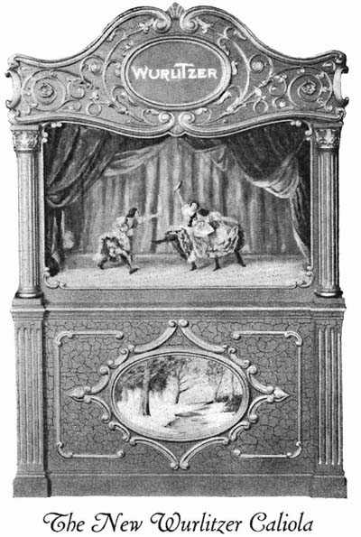2.14.1 Description
For Amusement Parks, Rinks, Carouselles, Circus Riding Devices and Outdoor Advertising.Just the instrument enterprising amusement interests have been looking forward to for years-something to attract the crowds-an entirely new musical instrument with a beautiful tone and remarkable volume. It plays from rolls or may be played by hand, creating beautiful musical effects. No class of amusement can afford to overlook this opportunity, as it is ideal for Circuses, Parks, Rinks, Riding Devices-in fact every amusement. As an outdoor advertising feature for Truck, Show Wagon or Ballyhoo Platform, there is no other instrument comparable to this New Wurlitzer Caliola.
2.14.2 Instrumentation
44-note Flute Pipes, either Wood or Brass. Equipped with or without Keyboard Plays ten-tune 65-note, Automatic Player Piano Roll. Operated by 1/4 H.P. Electric motor or 1 1/2 H.P. Gas Engine. Worm Drive Countershaft attached to case. Equipped with loud or soft volume control. Instrument can be furnished with Bass and Snare Drums at an additional charge.2.14.3 Dimensions
HEIGHT TO Top OF SCROLL, 5 feet, 4 inches. HEIGHT WITHOUT ScROLL, 4 feet, 8 inches. WIDTH, 3 feet, 7 1/2 inches. DEPTH,2 feet, 10 inches. WEIGHT, 435 Ibs. with countershaft and drive wheel.FINISH-Red or Green Crackle Lacquer with carvings in Gold. Hand Painted Picture on Panel and Screens.
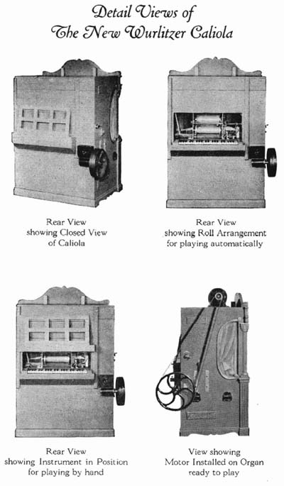